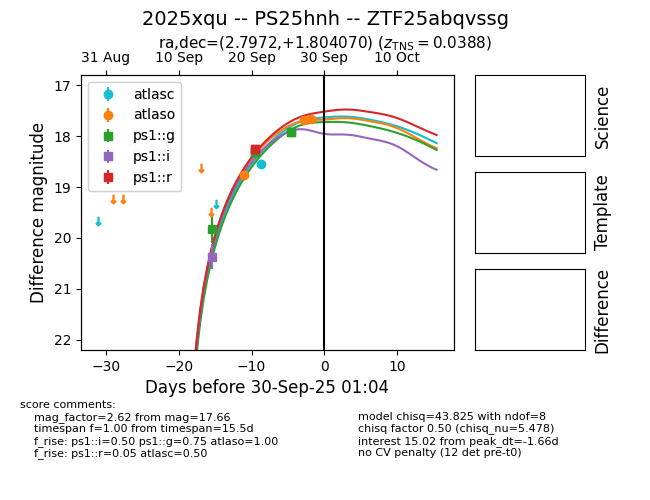
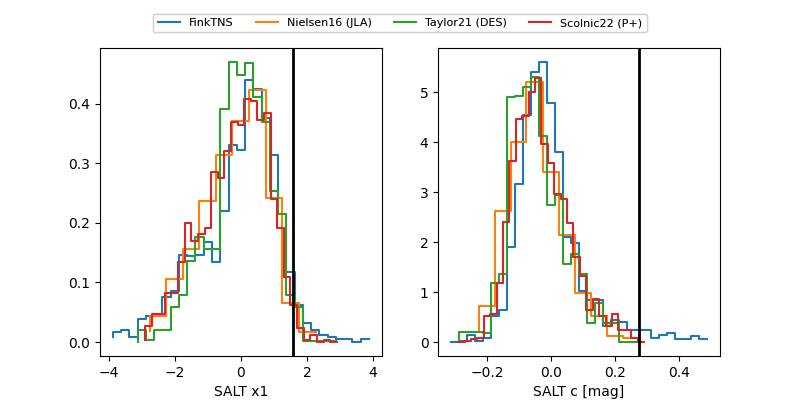

FINK: ZTF25abqvssg
Lasair: ZTF25abqvssg
ALeRCE: ZTF25abqvssg
TNS: 2025xqu
YSE: 2025xqu
2025xqu (yse,tns)
ZTF25abqvssg (ztf)
PS25hnh (panstarrs)
equatorial (ra, dec) = (2.7972,+1.80407)
galactic (l, b) = (102.8149,-59.48644)


last atlasc=18.54, atlaso=17.66, ps1::g=17.92, ps1::i=20.37, ps1::r=18.25
1 atlasc, 3 atlaso, 5 ps1::g, 1 ps1::i, 2 ps1::r detections